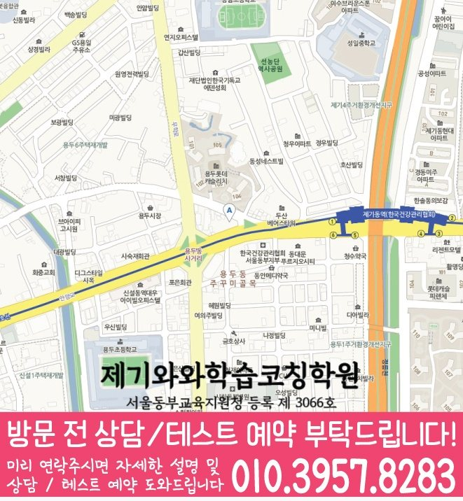

용두동 중등 영수학원 수업 안내


안내 이미지는 원래 가로 해상도를 유지해 이어서 보여 줍니다. 이미지를 누르면 원본 크기로 확대할 수 있습니다. 공통 안내와 해당 지점의 실제 운영 조건은 구분해 확인하세요.
지역 학원 안내
용두동 중등 영어와 수학을 함께 알아볼 때는 제기점의 과목별 개설 학년을 따로 확인하세요. 학생이 두 과목에서 막힌 부분과 가능한 등원 요일을 나누어 정리하면 과목 선택을 상담하기 좋습니다.
수업 안내와 함께 현재 과제에 필요한 공부 방법을 읽어 보세요. 글에서 정리한 질문을 이 페이지의 지점 상담에 가져갈 수 있습니다.
학습 중점과 확인 과제를 읽고, 학생이 어려워하는 부분을 상담 질문으로 준비하세요. 아래 계획은 학습 참고 자료이며 실제 수강 가능 학년·과목은 지점에서 확인할 수 있습니다.
선생님의 지도 방향을 읽고, 학생이 원하는 도움을 상담 질문으로 준비해 보세요. 담당 과목·학년은 지점에서 확인할 수 있습니다.
영어·수학 학년 비교
개설 학년은 제공된 지점 자료 기준이며 현재 모집 여부를 뜻하지 않습니다. 모집 요일·시간표·학생 진도에 맞는 수업 가능 여부는 등록 전에 지점에 확인하세요.
영어와 수학에서 혼자 해결하지 못한 문제를 각각 준비하세요. 두 과목의 수강 조건과 가능한 요일을 따로 확인한 뒤 우선순위를 상담하세요.
대광중학교 · 성일중학교
학교명은 제공된 타깃학교 자료의 참고 목록입니다. 학교별 전용반이나 현재 모집을 뜻하지 않으며, 진도·평가 범위는 학생이 가져온 최신 자료로 확인하세요.
안내 검토일
다음은 학년·과목별 공부 자료의 학습 참고 예시입니다. 지점의 확정 시간표나 실제 사용 교재를 뜻하지 않습니다.
교과서의 현재 단원, 처음 작성한 답안과 고친 답안을 함께 준비하세요. 학년별 계획과 실제 모집·과목 배정은 구분해서 확인하세요.
경희고등학교 · 대광고등학교 · 서울용두초등학교 · 서울종암초등학교 · 청량리고등학교
원자료의 학교 이름을 보존한 참고 목록입니다. 전용반·현재 모집이나 학교별 수업 운영을 뜻하지 않습니다. 학생의 최신 교재와 평가 안내로 상담 범위를 확인하세요.
안내 이미지는 원래 가로 해상도를 유지해 이어서 보여 줍니다. 이미지를 누르면 원본 크기로 확대할 수 있습니다. 공통 안내와 해당 지점의 실제 운영 조건은 구분해 확인하세요.

확인된 방문 주소: 서울 동대문구 왕산로 61 302호 와와학습코칭학원. 방문 시간과 학생의 과목·학년별 수업 가능 여부는 상담에서 확인하세요. 제기점 방문·수강 안내 · 대표 상담 010-3957-8283. 지도 이미지를 누르면 원본을 확대할 수 있습니다.
중등 영어는 읽거나 쓴 답의 근거, 수학은 첫 식과 계산 기록을 각각 준비하세요. 점수만 비교하지 않고 어느 단계에서 설명이 막혔는지 표시하면 우선 질문을 정하기 좋습니다.
이 비교는 제공 자료의 기재 차이입니다. 미기재가 현재 수업 불가를 뜻하지 않으며, 기재된 학년도 현재 모집 여부와 학생별 수업 범위는 지점에 확인해야 합니다.
중등 영어·수학을 함께 문의할 때는 두 과목의 점검 결과를 별도로 설명받을 수 있는지 질문하세요. 합산 점수보다 과목별로 학생이 혼자 할 수 있는 활동과 도움이 필요한 활동을 구분합니다.
제기점 영어 개설 자료의 중등 기재 학년은 중1 · 중2 · 중3입니다. 제기점 수학 개설 자료의 중등 기재 학년은 중1 · 중2 · 중3입니다. 개설 자료와 현재 모집 시간표는 다를 수 있으므로 희망 요일과 시작 시점은 지점에 확인하세요.
영어는 읽거나 쓴 답안에서 근거를 설명하지 못한 부분, 수학은 첫 식과 계산 중 멈춘 부분을 따로 표시하세요. 두 과목의 최근 기록과 공부할 수 있는 시간을 비교해 먼저 확인할 과목과 다음 복습 날짜를 정하세요.
용두동 타깃학교 참고 자료에 기재된 학교명은 대광중학교 · 성일중학교입니다. 학교명은 상담 참고 목록입니다. 전용반·현재 모집·학교별 수업 가능 여부를 뜻하지 않습니다. 재학 학교의 최신 교재와 평가 안내로 진도와 범위를 확인하세요.
제공된 자료만으로 현재 모집 요일, 정원이나 학생 진도별 배정을 확정할 수 없습니다. 학생의 학교·학년·이수 과목과 희망 요일을 알려주고 수업 범위를 확인하세요.
주소는 서울 동대문구 왕산로 61 302호 와와학습코칭학원입니다. 페이지의 교습비 자료 링크에서 제공 문서를 확인하세요. 과목·횟수·기간과 추가 비용 여부를 구분해 상담 답변을 기록하고 방문 시간도 확인하세요.
상담 후에는 두 과목의 답변을 같은 항목으로 비교해 다음 복습 계획을 정하세요. 아래 항목은 비교 기준이며 실제 수업 방식은 지점에서 확인해야 합니다.
같은 지역에서 함께 확인하기